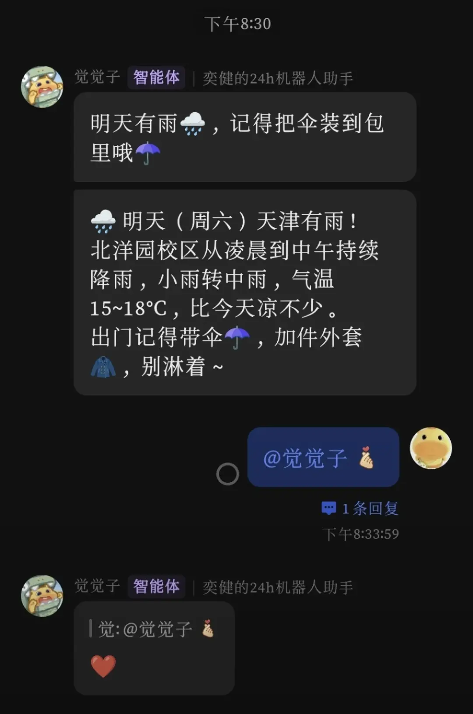
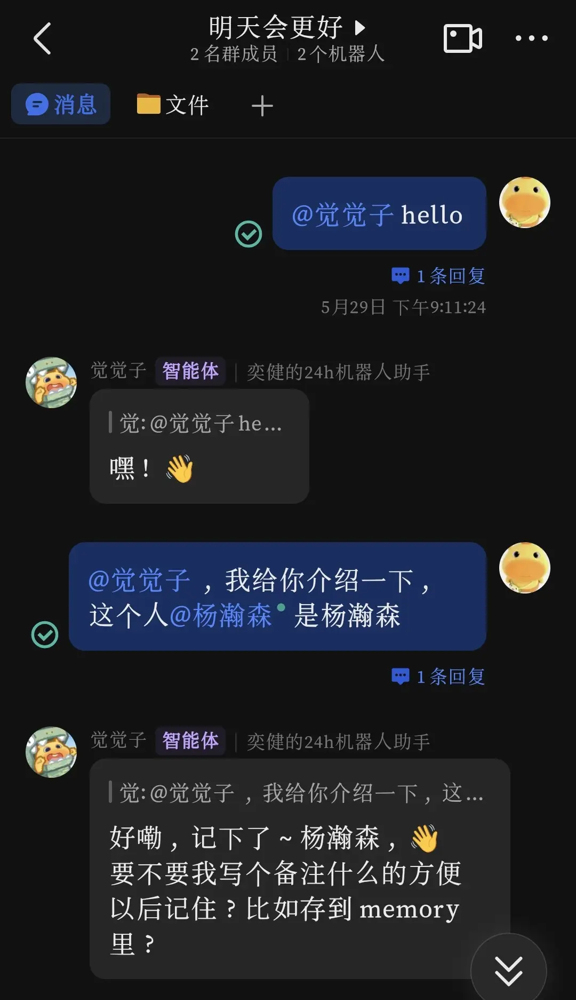
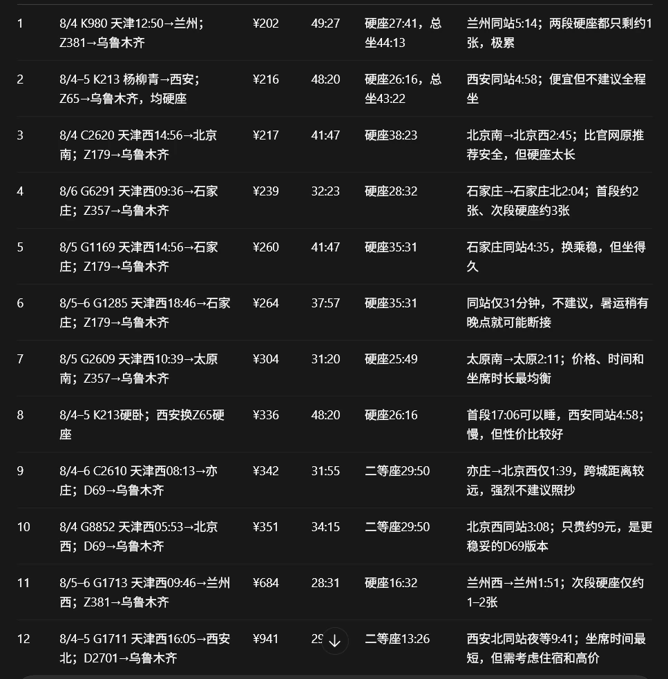

举个栗子
重复的活儿交出去之后，实际长这样。
返回 Offer
飞书 × AI 自动化
这是我用 AI 接入飞书搭的两个机器人，都常驻跑着，不用管。

工具机器人
每天自动推送天气预报，提醒带伞、加衣服。接入天气 API，定时触发，不用手动操作。

群聊机器人
在群里 @它就能对话，可以记住群成员、回复消息。接入大模型，24 小时在线。
只跑一次的脚本，也值得写
自动化不一定是天天跑的流程。有些事只做一次，但自己动手要熬掉一整晚。

一趟跨省火车怎么转，交给脚本去算
暑假从天津回乌鲁木齐，直达没票，只能中转。我让 Codex 帮我写了个脚本，去 12306 抓这几天几个可能中转城市的余票和票价，再把卧铺有没有、按学生票折算下来多少钱、总共要坐多久、换乘站留多少接续时间，放进同一张表里排序。跑完列出十二套方案，最便宜的 ¥202，最快的 28 小时半。这种活儿自己在 12306 上翻，一晚上都未必翻全。